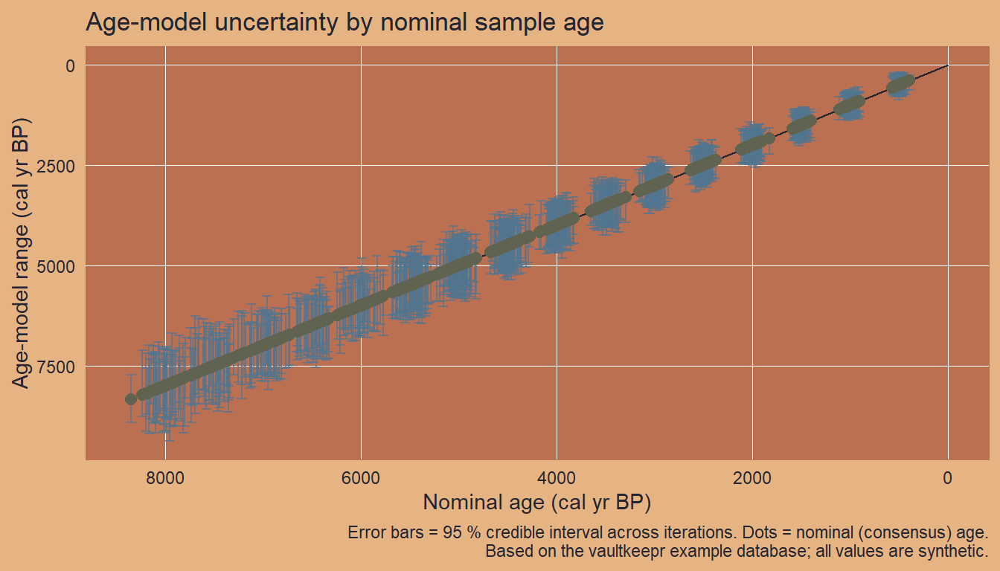
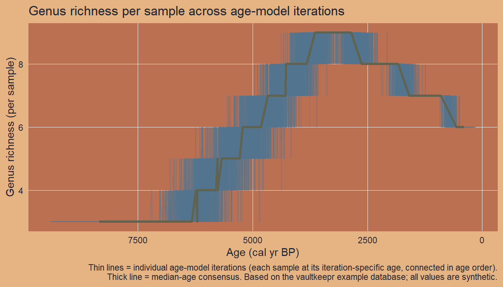

# Build (or reuse) the example database and return its file path
path_to_db <- source("helper_make_example_db.R")$valueIntroduction
Paleoecological records such as fossil pollen archives are inherently uncertain in two distinct ways.
Age uncertainty arises because the age of a sediment layer is not measured directly — it is estimated by an age-depth model (e.g. Bchron, OxCal) that fits a curve through a small number of radiocarbon dates and extrapolates between them. Running the model many times using a Bayesian or Monte Carlo framework produces a distribution of plausible ages for every sample depth — stored in VegVault as iterations.
Taxonomic uncertainty arises because pollen grains are often identifiable only to genus or family level, because multiple species can share the same morphotype, or because the reference collection used for identification may differ between labs. A future release of vaultkeepr will expose this through a dedicated function; a placeholder section at the end of this article describes the concept.
This article focuses on age uncertainty. We build a plan for fossil pollen archives from Western North America, then use get_age_uncertainty() as a companion call to retrieve the age iterations for every sample in scope.
We use a small example database (built automatically below) that mirrors the structure and naming conventions of a real VegVault file. Swap the path for your own VegVault download to run on real data.
Working with real data
Download the full VegVault database from the Database Access page. For an overview of available data see the Database Content page.
Step 1 — Open the vault
open_vault() creates a connection to the VegVault SQLite file and returns a vault_pipe object. This object is the plan — it carries both the live database connection and the accumulating lazy query through every subsequent step. No data is loaded into memory here.
library(vaultkeepr)
plan <-
open_vault(path = path_to_db)Step 2 — Add dataset metadata
get_datasets() extends the plan with the Datasets table — the central organising unit in VegVault. At this point every dataset in the database is in scope; subsequent steps narrow the selection.
plan <-
plan |>
get_datasets()Step 3 — Filter to fossil pollen archives
Age-depth modelling is only applied to sediment core records. We therefore keep only fossil_pollen_archive datasets — the dataset type in VegVault that corresponds to pollen cores processed by the Neotoma-FOSSILPOL workflow.
plan <-
plan |>
select_dataset_by_type(
sel_dataset_type = "fossil_pollen_archive"
)Step 4 — Filter by geography
We restrict to a bounding box in the Pacific Northwest (longitude −116 to −114 °W, latitude 44 to 46 °N), an area with several well-dated pollen cores.
plan <-
plan |>
select_dataset_by_geo(
long_lim = c(-116, -114),
lat_lim = c(44, 46)
)
#> The data does not contain the all dataset types specified in `vec_dataset_type`.
#> Changing `vec_dataset_type` to the dataset types present in the data as: fossil_pollen_archiveStep 5 — Add sample information
get_samples() extends the plan with sample-level metadata (age, sample_name, sample_size). For fossil pollen archives, age is the nominal consensus age from the age-depth model (in cal yr BP, where present = 1950 AD). The uncertainty around this nominal age is what we retrieve in the next section.
plan <-
plan |>
get_samples()Step 6 — Filter by age
We keep samples from the present (age = 0) back to 8,000 cal yr BP — the Holocene window.
plan <-
plan |>
select_samples_by_age(age_lim = c(0, 8000))
#> The data does not contain the all dataset types specified in `vec_dataset_type`.
#> Changing `vec_dataset_type` to the dataset types present in the data as: fossil_pollen_archiveAge uncertainty
What is stored in VegVault
For each sample in a fossil pollen archive, the age-depth model is run multiple times. Each run produces a slightly different age estimate for the same sediment depth — reflecting the combined uncertainty from the radiocarbon dates themselves, the accumulation rate model, and any tie-points used. These per-sample, per-iteration age estimates are stored in the SampleUncertainty table with three columns:
| Column | Content |
|---|---|
sample_id |
Links back to the sample in Samples
|
iteration |
Iteration number (1, 2, 3, …) |
age_uncertainty |
Age estimate for this iteration (cal yr BP) |
Retrieving age uncertainties
Note
get_age_uncertainty()is not a pipeline-building step. It does not return avault_pipeand cannot be chained with|>likeget_datasets()orget_samples(). Instead, it is a companion call on the sameplanobject onceget_samples()is already in the chain. It queries the database immediately and returns a tibble.By default (
return_raw_data = FALSE) the result is a wide tibble — one row per sample, withsample_nameas the identifier and one column per age-model iteration (iteration_1,iteration_2, …). Setreturn_raw_data = TRUEto get the long-format tibble with columnssample_id,iteration, andage_uncertainty— needed for join-based analysis.
data_age_unc <-
get_age_uncertainty(con = plan)
dplyr::glimpse(data_age_unc)
#> Rows: 1,134
#> Columns: 26
#> $ sample_name <chr> "sample_2", "sample_3", "sample_4", "sample_5", "sample_6…
#> $ iteration_1 <int> 266, 773, 1521, 2118, 2704, 3093, 3971, 4205, 4387, 5431,…
#> $ iteration_2 <int> 246, 726, 1215, 1889, 2491, 3027, 3177, 3938, 4432, 5152,…
#> $ iteration_3 <int> 303, 1020, 1158, 2214, 1980, 3143, 3842, 3639, 4410, 5185…
#> $ iteration_4 <int> 508, 1120, 1561, 1893, 2213, 3040, 3854, 3410, 4738, 5158…
#> $ iteration_5 <int> 422, 1042, 1560, 1815, 2605, 3488, 3064, 4266, 4762, 5143…
#> $ iteration_6 <int> 573, 880, 1490, 2265, 2550, 3029, 3105, 3835, 4605, 5356,…
#> $ iteration_7 <int> 367, 1116, 1480, 2222, 2373, 2994, 3709, 4079, 4444, 5008…
#> $ iteration_8 <int> 418, 911, 1421, 1906, 2842, 2716, 3370, 4330, 4806, 5364,…
#> $ iteration_9 <int> 553, 1033, 1266, 2027, 2683, 3079, 3336, 4013, 4259, 4832…
#> $ iteration_10 <int> 439, 1040, 1373, 1857, 2399, 2937, 3414, 3949, 4523, 5073…
#> $ iteration_11 <int> 401, 1030, 1434, 1637, 2399, 3138, 3604, 3568, 4393, 5281…
#> $ iteration_12 <int> 602, 1011, 1427, 1766, 2321, 2884, 3772, 3994, 4032, 5134…
#> $ iteration_13 <int> 299, 1027, 1500, 2155, 2725, 2387, 3412, 4286, 4356, 4922…
#> $ iteration_14 <int> 603, 1094, 1530, 2232, 2770, 2746, 3421, 4018, 4084, 4724…
#> $ iteration_15 <int> 663, 1150, 1505, 2104, 2673, 2939, 3347, 4141, 4391, 6082…
#> $ iteration_16 <int> 604, 930, 1754, 2060, 2629, 3116, 3440, 4781, 4508, 4679,…
#> $ iteration_17 <int> 658, 974, 1515, 2245, 2758, 2683, 3911, 4098, 4778, 4738,…
#> $ iteration_18 <int> 533, 1090, 1553, 1794, 2858, 2901, 3658, 4276, 4708, 5579…
#> $ iteration_19 <int> 422, 1139, 1290, 2159, 2608, 2896, 3857, 4119, 4933, 5039…
#> $ iteration_20 <int> 609, 1024, 1396, 2065, 2577, 3463, 3890, 3726, 4658, 4910…
#> $ iteration_21 <int> 600, 1125, 1491, 2040, 2310, 2897, 3719, 4014, 4887, 4602…
#> $ iteration_22 <int> 495, 981, 1793, 2159, 2281, 2982, 3549, 3707, 4492, 4889,…
#> $ iteration_23 <int> 541, 798, 1688, 2308, 2258, 2997, 3866, 3839, 4011, 4679,…
#> $ iteration_24 <int> 592, 1044, 1663, 1797, 2459, 2718, 3806, 4049, 3838, 5497…
#> $ iteration_25 <int> 588, 903, 1723, 2177, 2719, 3341, 2711, 3343, 4764, 4902,…By default the result is a wide tibble with one row per sample. sample_name identifies the sample; columns iteration_1 through iteration_5 hold the age estimate (cal yr BP) from each run of the age-depth model.
Visualising age uncertainty
To plot the uncertainty we need the nominal (consensus) age for each sample. We derive it as the median across all age-model iterations — a robust consensus estimate equivalent to the published consensus age from the age-depth model. The code below first pivots data_age_unc to long format before computing per-sample summaries.
Code
# Pivot wide age uncertainty to long for per-sample analysis;
# data_age_unc_long is reused in the richness section below
data_age_unc_long <-
data_age_unc |>
tidyr::pivot_longer(
cols = dplyr::starts_with("iteration_"),
names_to = "iteration",
values_to = "age_uncertainty"
)
# Nominal age per sample: median across all age-model iterations
data_nominal_ages <-
data_age_unc_long |>
dplyr::group_by(.data$sample_name) |>
dplyr::summarise(
age = as.integer(round(stats::median(.data$age_uncertainty))),
.groups = "drop"
)
# Per-sample 95 % credible interval of the age-depth model
data_age_summary <-
data_age_unc_long |>
dplyr::group_by(.data$sample_name) |>
dplyr::summarise(
lwr_95 = stats::quantile(
.data$age_uncertainty,
probs = 0.025,
na.rm = TRUE
),
upr_95 = stats::quantile(
.data$age_uncertainty,
probs = 0.975,
na.rm = TRUE
),
.groups = "drop"
) |>
dplyr::left_join(data_nominal_ages, by = "sample_name")
ggplot2::ggplot(
data = data_age_summary,
mapping = ggplot2::aes(
x = age,
ymin = lwr_95,
ymax = upr_95
)
) +
ggplot2::geom_segment(
mapping = ggplot2::aes(
x = 0,
xend = 8e3,
y = 0,
yend = 8e3
),
colour = col_black,
alpha = 0.5
) +
ggplot2::geom_errorbar(
colour = col_blue_light,
width = 100,
alpha = 0.7
) +
ggplot2::geom_point(
mapping = ggplot2::aes(y = age),
colour = col_green_dark,
size = 2.5
) +
ggplot2::scale_x_reverse() +
ggplot2::scale_y_reverse() +
ggplot2::labs(
title = "Age-model uncertainty by nominal sample age",
x = "Nominal age (cal yr BP)",
y = "Age-model range (cal yr BP)",
caption = paste0(
"Error bars = 95 % credible interval across iterations. ",
"Dots = nominal (consensus) age.\n",
"Based on the vaultkeepr example database; all values are synthetic."
)
)
The plot shows that older samples accumulate wider uncertainty intervals — a direct consequence of the SD term in the age-depth model scaling with age. This pattern is typical of real Holocene pollen records, where older depths have fewer or less precise radiocarbon constraints.
Richness across age iterations
To show how age uncertainty propagates into an ecological metric, we compute genus richness per sample under each age-model iteration. A sample’s observed taxa never change — only the age assigned to it does. Each iteration’s line places every sample at its iteration-specific age (connected in age order), making visible how samples can shift left or right along the time axis and altering the apparent shape of the richness curve.
Note
Genus richness is fixed per sample — the observed taxa do not change across iterations. Only the age assigned to the sample changes.
data_age_unc_longprovides per-iteration ages keyed bysample_name;data_sample_taxa(from the packedextract_data()output) provides the taxa, also keyed bysample_name. Both objects usesample_nameas the join key, so the default outputs fromget_age_uncertainty()andextract_data()are sufficient.
plan_taxa <-
plan |>
get_taxa(classify_to = "genus")
data_taxa_packed <-
plan_taxa |>
extract_data(verbose = FALSE)Code
# Unnest the packed community data and re-pivot to long to recover
# unique sample x genus combinations keyed by sample_name
data_sample_taxa <-
data_taxa_packed |>
dplyr::select("data_community") |>
tidyr::unnest("data_community") |>
tidyr::pivot_longer(
cols = -"sample_name",
names_to = "taxon_name",
values_to = "n"
) |>
dplyr::filter(!is.na(.data$n), .data$n > 0) |>
dplyr::distinct(.data$sample_name, .data$taxon_name)
# Per-sample richness (fixed across iterations: a sample's taxa never change)
data_richness_per_sample <-
data_sample_taxa |>
dplyr::group_by(.data$sample_name) |>
dplyr::summarise(
n_taxa = dplyr::n_distinct(.data$taxon_name),
.groups = "drop"
)
# Attach per-iteration ages: each sample gets one row per iteration
data_richness_iter <-
data_richness_per_sample |>
dplyr::inner_join(data_age_unc_long, by = "sample_name") |>
dplyr::arrange(.data$iteration, .data$age_uncertainty)
# Consensus line: each sample placed at its median age across iterations
data_richness_median <-
data_richness_iter |>
dplyr::group_by(.data$sample_name, .data$n_taxa) |>
dplyr::summarise(
age_uncertainty = stats::median(.data$age_uncertainty),
.groups = "drop"
) |>
dplyr::arrange(.data$age_uncertainty)
ggplot2::ggplot(
data = data_richness_iter,
mapping = ggplot2::aes(
x = age_uncertainty,
y = n_taxa,
group = as.factor(.data$iteration)
)
) +
ggplot2::geom_line(
colour = col_blue_light,
alpha = 0.4,
linewidth = 0.5
) +
ggplot2::geom_line(
data = data_richness_median,
mapping = ggplot2::aes(group = NULL),
colour = col_green_dark,
linewidth = 1.2
) +
ggplot2::scale_x_reverse() +
ggplot2::labs(
title = "Genus richness per sample across age-model iterations",
x = "Age (cal yr BP)",
y = "Genus richness (per sample)",
caption = paste0(
"Thin lines = individual age-model iterations (each sample at its ",
"iteration-specific age, connected in age order).\n",
"Thick line = median-age consensus. ",
"Based on the vaultkeepr example database; all values are synthetic."
)
)
Each thin line is one age-model iteration; each point on a line is one sample placed at the age assigned to it by that iteration. The thick line places each sample at its median age across all iterations as a consensus reference. Because age uncertainty shifts individual samples left or right, the bundle of lines widens for older samples where radiocarbon constraints are sparser and the age-depth model variance is larger.
Full pipeline
Build the plan and retrieve the age uncertainty in a single script:
plan <-
open_vault(path = path_to_db) |>
get_datasets() |>
select_dataset_by_type(
sel_dataset_type = "fossil_pollen_archive"
) |>
select_dataset_by_geo(
long_lim = c(-116, -114),
lat_lim = c(44, 46)
) |>
get_samples() |>
select_samples_by_age(age_lim = c(0, 8000))
# Age uncertainty — default wide output (sample_name + one col per iteration)
data_age_unc <-
get_age_uncertainty(con = plan)
# Extend with taxa for the richness-per-iteration analysis
# default packed output; unnested inside the analysis chunk below
data_taxa_packed <-
plan |>
get_taxa(classify_to = "genus") |>
extract_data(verbose = FALSE)Next steps
- Add taxa data and explore taxon distributions — see the taxa distribution article
- Combine with abiotic climate variables — see the vegetation and climate article
- Retrieve all data citations before publishing — see the references article
- When publishing, cite VegVault using the data paper